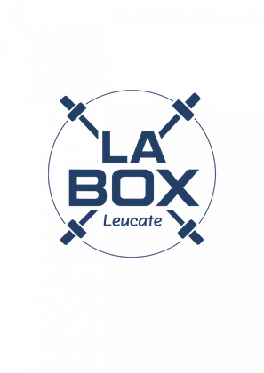
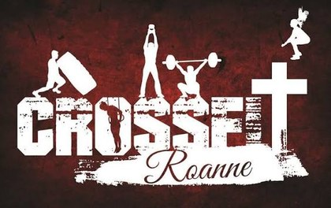
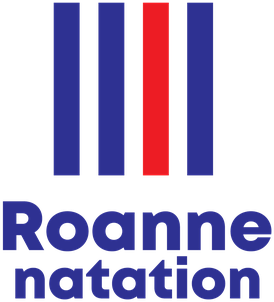
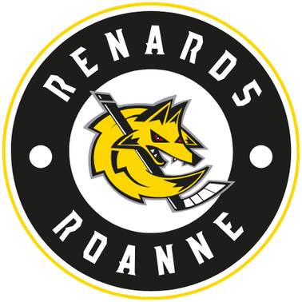

Crossfit
Depuis 2026 · principal
Gérer mon effort et ne pas lâcher avant la fin du WOD.
 Loïs Courtade
Loïs Courtade
J'aime construire des projets concrets et les mener jusqu'au bout. Je travaille à la rencontre de la gestion, du marketing et de la création. J'ai lancé ma propre activité de personnalisation textile, Weart. J'ai accompagné un cinéma dans la promotion de ses espaces. Et chaque été, j'encadre des sauveteurs sur le littoral audois. Ces expériences m'ont appris à décider seul quand il le faut, à m'organiser et à rester fiable quand la situation se complique.
Dix ans de natation en compétition, puis la boxe et le crossfit. La régularité m’apprend la même chose que mes projets : les résultats viennent avec la constance, pas avec les coups d’éclat.



